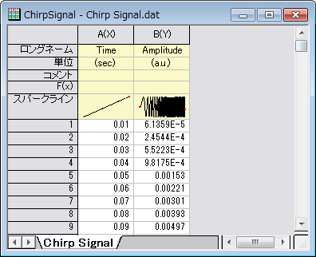
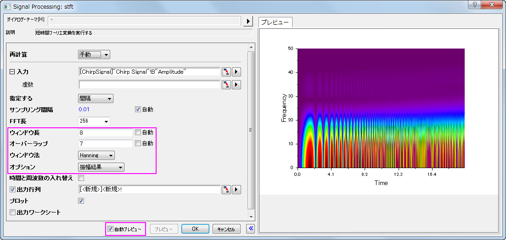
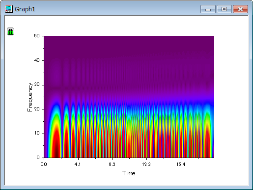
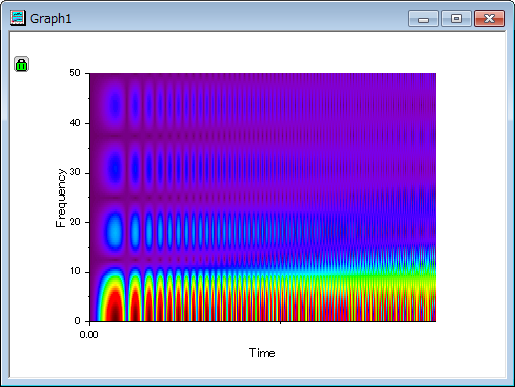
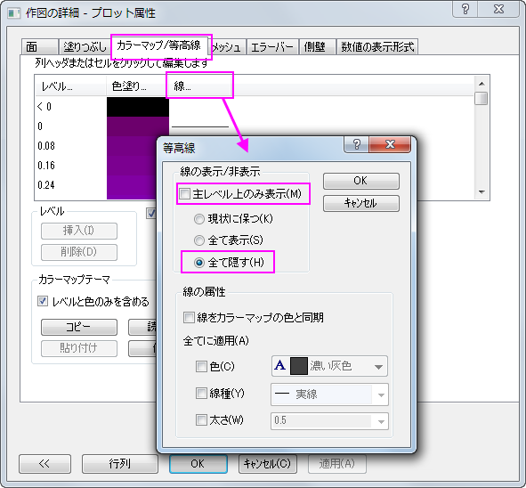
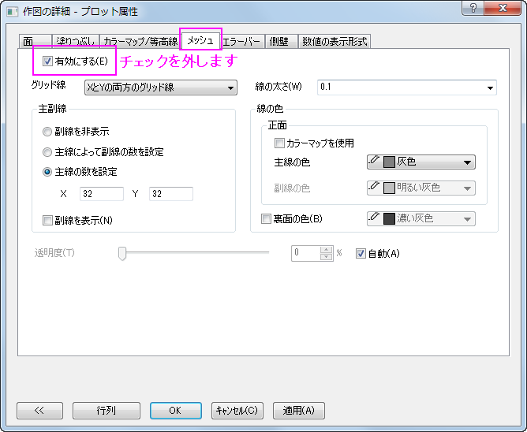
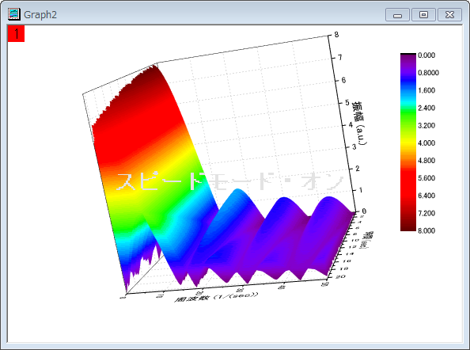

STFT (短時間フーリエ変換)
STFT
サマリー
短時間フーリエ変換（STFT）は、時間-周波数分析で非定常信号の分析に適しています。そしてSTFTは、時間の経過とともにどのように、周波数が変化するかについての情報を提供することができます。時間軸に沿ってウィンドウを移動し、時間と周波数の変化の関係が識別できます。
学習する項目
このチュートリアルで以下のことを行います：
- 短時間フーリエ変換（STFT）を実行する
- 時間と周波数解像度を向上させるためダイアログの設定を変更する
- 解像度の向上のため、ウィンドウの種類を変更する
ステップ
- 新しいワークブックを作成し、<Origin インストールディレクトリ>\Samples\Signal Processing\Chirp Signal.dat をインポートします。
- 
- B列を選択して、解析：信号処理：STFTを選択し、Signal Processing: stftダイアログを開きます。
- ダイアログの自動プレビューチェックボックスにチェックを付け、右パネルでプレビューできるようにします。ウィンドウ長の項目にある自動のチェックを外し、ウィンドウ長を8にし、オーバーラップを7に設定します。ウィンドウタイプをHanning、オプションは振幅結果にします。
- 
- OKボタンをクリックして、この設定でSTFTを実行し、行列データと等高線グラフを含む結果を取得します。
- 
- 上図を見ると時間解像度は良好ですが、周波数は明らかではないことがわかります。グラフ内の鍵のアイコンをクリックして、コンテキストメニューからパラメータの変更を選択して、ダイアログを再度開きます。ウィンドウ法を四角形に変更してOKボタンをクリックします。
- 
- 時間と周波数解像度がよくなりました。時間と周波数ともに最良な解像度を得ることはできないので注意してください。片方が良く、片方が悪い場合、それらのバランスを取ることはできます。
- 3次元的に結果を表示するため、結果行列をアクティブにし、メニューから作図：3D曲面：カラーマップ曲面を選択して3D曲面図を作図します。
- 3Dグラフ上でダブルクリックして、作図の詳細ダイアログを開き、左パネルでカラーマップ/等高線タブを開きます。線ヘッダをクリックして等高線ダイアログを開き、全ての線を非表示にします。
- 
- メッシュタブを開き、有効にするチェックを外してメッシュ線を非表示にします。
- 
- OK をクリックして終了します。グラフを回転して下図のように見やすくします。
- 